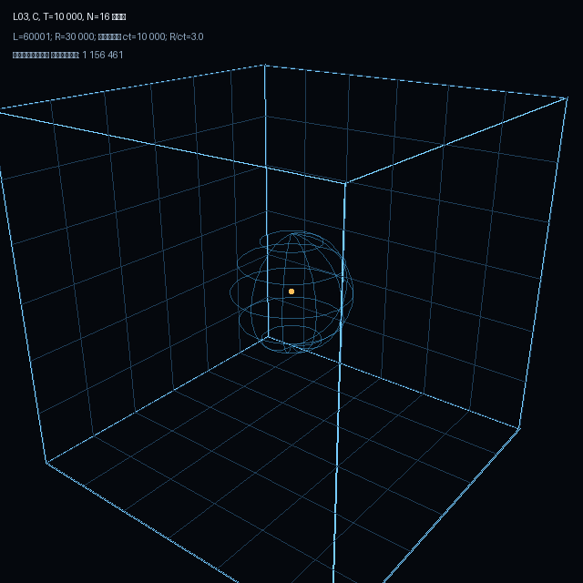
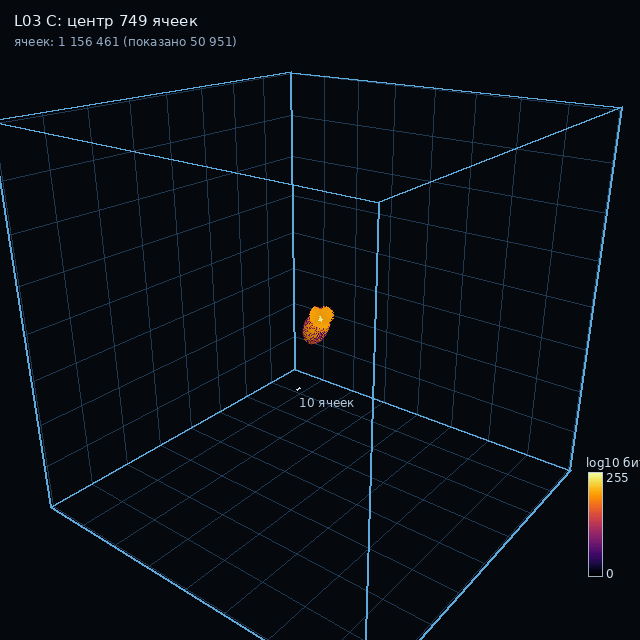

C-версия локального автомата: хеш-таблица активных клеток, никаких массивов L³, FFT и поля. Зародыш — одна клетка, N=16 000 000 бит. Куб L=60 001: радиус 30 000, фронт c·t=10 000 — пространство больше фронта в 3 раза, сфера не упирается в стенку.
Состояние — открытая хеш-таблица (x,y,z) → (p,n). За такт перебираются только активные клетки; пустые не существуют в памяти. Каждая клетка делит биты по шести направлениям по правилу L03 (mob=20%, f=0.8, attr=1, rep=1, bias=0.2 diag, noise=0.5). Шум детерминированный (хеш от координаты, такта и направления), поэтому прогон воспроизводим.
Доли целочисленные, остаток остаётся; p и n сохраняются. Память — две таблицы по 226 слотов, поколения вместо очистки.
Раньше при L=97 фронт 71 упирался в стенку. Теперь до стенки 30 000, а фронт причинности 10 000 — запас 20 000 клеток. Структура занимает малую часть куба: на полном кадре точка и сфера, на зуме — сама структура.
| параметр | значение |
|---|---|
| N бит | 16000000 |
| P | 12800000 |
| N-бит | 3200000 |
| активных клеток | 1156461 |
| фронт структуры | 371.25 |
| blob | 0.4368755701446322 |
| network | 0.027834527454488698 |
| кластеров | 1 |
| L | 60001 |
| R | 30000 |
| R / c·t | 3.0 |
| T | активных | бит | фронт |
|---|---|---|---|
| 1000 | 129 504 | 16 000 000 | 62.47 |
| 2000 | 320 546 | 16 000 000 | 107.45 |
| 3000 | 522 812 | 16 000 000 | 150.17 |
| 4000 | 703 435 | 16 000 000 | 191.74 |
| 5000 | 847 034 | 16 000 000 | 232.20 |
| 6000 | 971 069 | 16 000 000 | 272.55 |
| 7000 | 1 068 081 | 16 000 000 | 311.81 |
| 8000 | 1 127 738 | 16 000 000 | 350.47 |
| 9000 | 1 146 036 | 16 000 000 | 367.78 |
| 10000 | 1 156 461 | 16 000 000 | 371.25 |


| Проверка | Статус | Значение |
|---|---|---|
| T=10 000 (C) | PASS | 10000 |
| N=16 000 000 бит | PASS | 16000000 |
| R=30 000 > c·t=10 000 | PASS | 3.0 |
| фронт не дошёл до стенки | PASS | 371.25 |
| есть структура | PASS | 1156461 |
| картинки | PASS | ['p5_c_full.png', 'p5_c_zoom.png'] |
native/ca3d_sparse.cgcc -O3 -march=native -o ca3d_sparse ca3d_sparse.c -lm./ca3d_sparse 20000 0.8 state.binscripts/analyze_c_20000.pyДлинный Python-прогон с уменьшенным N: ca3d5_long.html. Часть 5: ca3d5.html.